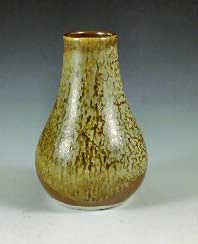
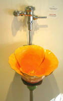
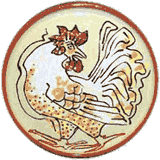

| Some links open in a
new window.
Wedgwood's
famous Black Basalt and Jasper ware Portland Vase of 1790
was modelled on a Roman cameo glass vase from around the 1st
century BC. The original is also known as the Barberini vase.
The vase was found near Rome in an ancient marble sarcophagus.
After passing through several hands, it was acquired by the
Duke of Portland, by whose name it is known today.
Find
out more
|
Did
you know that a mixture of 77% cat litter and 23% cement will
make a nice cone 10 fake ash glaze? No? Then you must have
missed John Britt's article on the use of alternative household
materials in ceramics...
Find out
more |
It seems there is no limit to the use of ceramics in technology,
be it for peaceful purposes or otherwise. Ultrahard ceramic
layers are built into the steel in tank bodies. When a projectile
penetrates a layer, it pulverizes the ceramic, breaking the
bonds that bind the molecules together. This chemical change
causes the ceramic fragments to expand. In expanding, they
grind up the softer material of the projectile, making it
inoperative.
Find
out more. |
In 2003, Iraqi studio potter and painter Nuha al-Radi published
her account of the first Iraq war titled Baghdad Diaries,
A Women's Chronicle of War and Exile. Al-Radi went into
voluntary 'exile' in Lebanon, teaching at the American University
of Beirut. She later commuted between both countries. She
died in 2004 of leukemia, supposedly induced by uranium-tipped
ordnance used in both Iraq wars.
Find
out more. |
Jakob Kraut (1568–1641) was born the son of German tile
stove maker Hans Kraut (ca. 1532–1592). He also became
a tile stove maker. Unfortunately he must have associated
with the wrong people or someone bore him a grudge - he was
denounced to the inquisition as a sorcerer and executed in
1641. More on the history
of tile stoves.
Source: Christian Roder, Zur Lebensgeschichte
und Würdigung des Hafners Hans Kraut von Villingen und
seiner nächsten Nachkommen, in: Zeitschrift für
die Geschichte des Oberrheins no. 61, 1907
|
Known to few today, Katherine Pleydell-Bouverie published
two novels before turning her attention to pottery full-time.
They were January, published in 1924 and The Inn
in the Valley, published in 1927.
Pictured: Pleydell-Bouverie's Leach kick wheel. |
Orton cones were invented in the 1890's by American ceramic
engineer and teacher Edward
J. Orton Jr. (1863-1932) to accurately measure kiln
temperature. In 1896 he established his Standard Pyrometric
Cone Company. Orton was also a co-founder of the American
Ceramics Society in 1899, as well as President of the Ohio
Institute of Mining Engineers from 1893-94, Ohio State Geologist
from 1899-1906 and Dean of the College of Engineering at The
Ohio State University from 1902-06 and 1910-15. |
Studio potter Mirek Smisek was born in Czechoslovakia and
emigrated to New Zealand via Australia in 1951. His work has
possibly been seen by more people than any other New Zealand
artist - namely in the Lord of the Rings trilogy, in
particular the goblets,
jugs, wine bottles and bowls to be seen in the Prancing Pony
scenes in The Fellowship of the Ring. |
Before turning his attention to pottery in the late 1920s,
Frederick Carlton Ball (1911-1992) was a prize fighter who
went by the name "California Gene Tunney". During
that time he also worked in the local mines, packing explosives
into blast holes. Ball later went on to teach ceramics at
several colleges for more than 40 years, including the California
College of Arts and Crafts, Southern Illinois University,
the University of Puget Sound, Mills College, Oakland and
the University of Southern California, where Fred Olsen was
amongst his students. He also wrote a book called 'Decorating
Pottery with Clay, Slip and Glaze'.
Source: Rick
Mahaffey |
Pablo Picasso is known as one of the greatest painters of
the 20th century, however not that many people know about
his prolific ceramic output. The Spanish painter showed an
interest in pottery as early as 1904, when he made his first
ceramic work, ‘Woman Combing Hair’. Developing
a passion for clay, he worked at Suzanne and George Ramié’s
Madoura pottery in Vallauris, France for two years from 1947–48,
returning there in subsequent years until 1971 to make more
pottery.
Find
out more. |
The old J.B. Owens Pottery and Tile Plant in Zanesville, Ohio
became notorious after it closed as a pottery, for being the
site of a concealed and illegal liquor-making operation set
up after the repeal of prohibition in the USA, to avoid the
paying of Federal Excise taxes. It turned out to be the largest
capacity still ever shut down by the federal government. HB
Find
out more. |
Canadian ceramist Kathy Venter's bizarre ceramic 'Immersion
Series' consists of life-size figurative sculptures of people
floating under water. It is left to the viewer's imagination
to figure out due to which circumstances they are immersed
in water. Despite a faint smile on one face, that fact that
they are wearing clothes would indicate that these 'people'
drowned... Non-the-less, Venter's interpretation of the effects
of underwater low-gravity are intriguing.
Find
out more. |
What could possibly be the last thing you'd build a
kiln from? Hmmm, maybe ice? Never one to shy away from
a challenge, this is exactly what intrepid New Zealand potter
Peter Lange (yes, the guy who built a brick boat) did at the
46th New Zealand Studio Potters conference in Invercargill.
And, oh, did I mention the wood
kiln? (A kiln built of wood...)
Find
out more. |
John Brickles creates hyper-realistic buildings made from
slabs of clay. Walls are cut out from the slabs, stood up
and joined at the corners with slip. Windows are cut out and
textures added. Bricks are inscribed with a needle and ruler.
Boards and shingles are extruded from a clay gun and are attached
individually.
Find
out more. |

Clark Sorensen has created some of the most amazing and beautiful
urinals you are likely to ever see. Each one is meticulously
hand-built and one-of-a-kind - formed from high-fire porcelain
and fired to cone 10 (2300 deg. F.). They are fully functioning
vitreous porcelain fixtures that can actually be plumbed and
used in a bathroom or simply displayed.
Find out more. |
Canadian studio potter Steve Irvine has created a model of
the Solar System - to scale! The distance from the 'Sun' to
'Pluto' is 400 meters (about 435 yards). The solar system
is located in a field next to 'Keppel Henge', a site constructed
by Irvine and Bill Loney in 2000, featuring a six meter sundial
and a series of megaliths. Pictured: Jupiter.
Find out
more. |
Joan Lederman is a Massachussetts based studio potter who
has developed a technique of glazing with sediments deep from
the ocean floor. The sediments are sourced from core samples
collected by the Woods Hole Oceanographic Institution in locations
ranging from the Grand Bahama Banks to the Bering Sea and
the North Atlantic.
Find
out more.
|
In 19th century Staffordshire, the 'muffin maker' was a potteries
worker, who specialized in making small plates less then 7
inches (18 cm) in diameter. The plates were made on a mold,
in a jigger/jolley fashion. The 'mold runner', usually a young
boy of as little as 9-10 years of age, would take the mold
with its newly formed plate to a drying room and bring another
blank.
Source: When I was a Child, C. Shaw (An Old Potter),
1903.
Find
out more. |
Shoji Hamada was a potter who did not sign his pieces. Once
he was asked about another potter who was copying his work.
His response was that "in a hundred years his best work
will be attributed to me and my worst work will be thought
to be his".
Source: Sebastian
Blackie, Dear Mr. Leach... Some Thoughts on Ceramics. |
Paper usually contains kaolin, calcium carbonate or clay as
a filller and 'whitener'. Therefore, when making paperclay,
one might have to consider changes to the maturing temperature
of the clay due to the extra 'raw' materials added with the
paper. The maturing temperature may go up or down, dpending
on the original maturing temperature of the clay and the composition
of the paper.
Find out more. |
Privy Councilor and founder of Rosenthal Porcelain Manufactory
Philip Rosenthal (1855-1937) was also a great designer. His
renown classic service 'Maria' of 1916 was lovingly named
after his wife, French Countess Maria de Beurges.
Find
out more. |
The Piggy Bank probably derives its name from the orange clay,
"pygg" from which it was originally made. By the
turn of the eighteenth century, the jars had acquired the
name of "pig banks". They were ceramic and had no
hole in the bottom, so the pig had to be broken to get the
money out. To this day in some European countries, it is customary
to give piggy banks as gifts because the belief is still held
that pigs bring luck and good fortune.
Find
out more. |
In 1918 President Woodrow Wilson commissioned the US porcelain
manufacturer Lenox Incorporated to create an official state
service of 1,700 pieces, making Lenox the first American china
to grace a president's table. It remains the only American
porcelain in continuous use at the White House for more than
85 years, with new services created for four subsequent presidents:
Franklin D. Roosevelt (1934), Truman (1951), Reagan (1981),
and Clinton (2000).
Find
out more. |
'Clay' proverbs from
around the world:
- The same heat that melts the wax will harden the clay.
(English)
- A clay pot of water is never hot-tempered. (Nigeria)
- A watched pot never boils. (English)
- Should I follow this route with some clay soil or that
one with ochre. (Kenya)
- Work with clay while it is still wet. (Kenya/Swahili)
- Clay pots kept together don't cease to rattle. (Kenya/Swahili)
- Candlemas day, put beans in the clay; put candles and
candlesticks away. (Yiddish)
- A clay figure fears rain. (China)
- They prevent us from getting red clay from the pit, and
they do not use it. (South Africa/Xhosa)
- It is dangerous for a clay Buddha to play with water.
(Japan)
- If you have no teeth, do not break the clay cooking pot.
(Chewa/Malawi)
- Clay and lime conceal much evil. (Spanish)
- Many a day shall we rest in the clay. (Irish)
Various sources |
In 1765, the wife of French surgeon Jean-Baptiste Darnet was
using a white and unctuous paste that whitened fabrics to
wash her linen. Her husband was eager to commercialize the
mysterious substance and went to see an apothecary to work
out a formula for a new detergent. The apothecary identified
the material as pure white kaolin, spawning the Limoges ceramics
industry.
Source: Couleur
87 |
A Zen story tells of a master who, on handing a beautifully
lacquered bowl to a monk, asked, "What's the most important
part of this bowl." The monk carefully examined the detailed
and delicate gold work, the polish and sheen of the bowl's
surface and finally admitted he didn't know. "This part",
the master said and with a sweep of his hand indicated the
inner volume of the bowl. |
 The mysterious face of a bearded man staring out from an ancient
piece of pottery has given scientists a glimpse of what the
first settlers of Fiji may have looked like. Researchers said
the "extraordinary discovery" was a vital clue in
mapping out how the South Pacific came to be inhabited some
3000 years ago, suggesting the first direct link to islands
some thousands of kilometres away. The researchers think the
pottery was the work of the Lapita people, a long-lost race
that originated near modern-day Taiwan then migrated to Polynesia.
The mysterious face of a bearded man staring out from an ancient
piece of pottery has given scientists a glimpse of what the
first settlers of Fiji may have looked like. Researchers said
the "extraordinary discovery" was a vital clue in
mapping out how the South Pacific came to be inhabited some
3000 years ago, suggesting the first direct link to islands
some thousands of kilometres away. The researchers think the
pottery was the work of the Lapita people, a long-lost race
that originated near modern-day Taiwan then migrated to Polynesia.
Find
out more |
In
Delft, The Netherlands, people take their traditional pottery
very seriously, as is attested by this car, painted in the
classic Delft Blue style. |
According to Chinese symbolism, the dragon represents masculinity
and the phoenix femininity. However in some Chinese folklore,
the human race was created by Nu Wa, a half dragon, half women,
who fashioned the first human beings out of clay.
Find
out more |
During World War II, Shoji Hamada traveled to England, visiting
Bernard Leach at his St. Ives pottery so often that authorities
began to suspect him of spying for the Japanese government.
Find
out more |

At the Golden Egg Farm Poultry and Pottery in Hardwick, Massachusetts,
USA, pottery is produced and poultry is reproduced. Terracotta
clay is used to produce functional ware, sculpture and ceramic
tiles and (surprise!), pottery themes tend to include poultry.
HB
Find out more |
Tenmokku
glazes originated in China before the Sung dynasty, in the
region of the Chien Ch'i river, where they are known as Chien
Yao or Jian Yao. The Japanese name Tenmokku (or Temmoku) is
derived from 'T'iem Mu Shan', the 'Mountain of the Eye of
Heaven', the location of a monastery in Chekiang province,
China, where a tea ritual was performed using Jian bowls.
Pictured: Tenmokku Jar by Wang Chun Wen.
Find
out more |
The
WTO, also known as the World Toilet Organization has just
concluded its World Toilet Summit 2004 in Beijing, China.
Hot topics included toilet management and hygiene, toilet
design and energy-saving measures. Participants are dedicated
to the development of world toilets and discussed the trend
of the world toilet development and the latest toilet technology.
Pictured: Marcel Duchamp's 'Readymade' of 1917.
Find
out more |
Renown,
exuberant American studio potter Beatrice Wood (1893-1998)
lived to the ripe old age of 104 and continued to make work
until shortly before passing away. Hers is a rich and exciting
story. She began her career in theater and was a good friend
of Dadaist Marcel Duchamp. Wood narrated her exploits in her
autobiography I Shock Myself, written when she was
93.
Find
out more |
Pit
firings can attract the attention of the local fire department,
especially in urban areas. One member of the Clayart Listserv,
resident in Texas, had this suggestion: "Work out what
is legal and ordinary to burn, and tell the fire department
that was the fuel. In Texas people barbecue with mesquite
a lot, and there is often smoke at the beginning. For a pit
firing I would add a few mesquite logs, which have a very
distinctive odor, and voila! Nobody tells a Texan they can't
barbecue..." HB
How to do a Pit Firing |
Initially
developed by Georgia studio potter and teacher Rick Berman
and adapted by Cleveland potter Todd Leech, 'Salku' is a 'glazing'
technique whereby salt is introduced into a fast-firing kiln
mid-fire. The surfaces of the resulting pots are extremely
crusty, non-functional, and in fact tend to disintegrate over
time.
Find out more |
More Oddspots...
|
{kind=link}